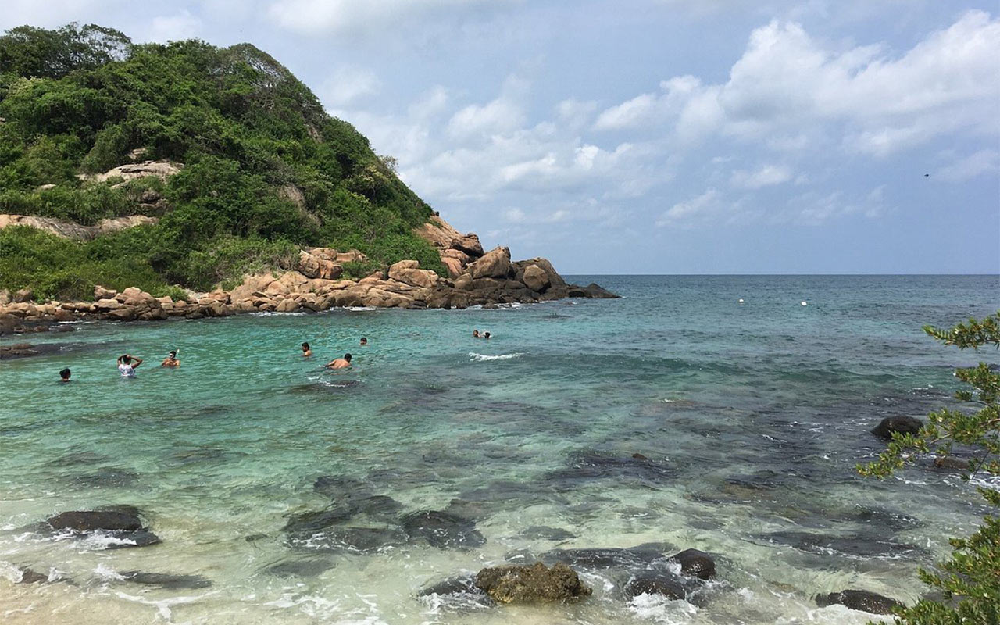

Nilaweli

On this list of best beaches in Sri Lanka, a name sure to appear is Unawatuna Beach. Just an hour
away from Sri Lanka's capital city, Colombo, this beach is a heaven for beach bums. With fancy
restaurants, bars, shacks, beach properties, shopping streets and fun activities worth engaging in
that are carried out in the surrounding areas, Unawatuna beach is a great spot to unwind, ditching
the routine.
The beach looks like a banana and has golden sand with sparkling water. Here, the lush palm trees
not only make the beach look extra scenic but also contribute to keeping the environment pleasant
on most days.
Best time to visit:
Late August and early September as the rain starts to set by mid-October
Famous for :
Stylish, spacious accommodations around the beach
Good for sightseeing with a generous amount of Tamil culture
Recreational water sports such as scuba diving
The hot water wells and pigeon islands
An old fort from the colonial era is also present
Hotels
Nilaveli Beach Hotel
Oceanfront Condominiums - Nilaveli
Trincomalee
The bay of Trincomalee's harbor is very famous for its trade and cargo. Its a big beach
which is indeed famous for ancient temples, trade and water sports. It is one of
the best beaches in Sri Lanka.
Best time to visit:
August to October
Famous for:
Hot Springs of Kanniya is a definite visit, its located just over 5 miles
off the Anuradhapura Road
great Hindu Shrine sacred to Koneswaran are visited by many
which is one of the 5 Isvaram Hindu Shrines
Visit the beautiful tank called Periyakulam is a Buddhist Temple and
spot the frontal bone relic of Buddha, built in the 3rd century is worth
a visit.
The finest Circular Shrines which is as old as the 7th century is located
at Tirivava
The marble bay promises variety of watersports such as diving and
surfing
Hotels
Trinco Blu By Cinnamon
Sea Lotus Park Hotel
Jkab Beach Resort
Marble Beach
Marble beach, also known as Marble Bay is one of the beautiful beaches
in Trincomalee. Because it's 17 kilometres outside of Trincomalee
located, not many people know about this place. Run by the air force,
there is a resort and restaurant at the north end of the cove of Marble
beach. Spend your time at the south end of the beach in beautiful emerald
water and enjoy the quiet area. In our opinion this is one of the best beaches in Sri Lanka. Read this best beaches in Sri Lanka blog post everything about Marble
beach.
- However, the highlight of the beach is its fine sand and the sightings of peacocks, monkeys and cattle along with a variety of birds.
- For the lazy visitor, the sands are perfect for spending a few hours at the beach getting a sun-kissed tan. When here, don't forget to visit the nearby 'Diamond Hill' that offers a fabulous view of the city.
Best time to visit:
Late August and early September as the rain starts to set by mid-October
Things to do at Marble beach :
Besides enjoying the beach, sunbathing and swimming, you can go
snorkeling around the rocks at Marble beach. There are some colourful fish
to spot here, and because the water is so calm you don't have to worry
about the current or big waves. If you're hungry, the restaurant at the beach
serves delicious foods.If you want to go exploring around, then there are plenty of things to do in
Trincomalee. Head over to this blog post to find out about all the
places
you need to visit in Trincomalee.
Hotels
Trinco Blu By Cinnamon
Sea Lotus Park Hotel
Jkab Beach Resort
Best tours to do in and around Trincomalee
If you want to explore the best of what Trincomalee has to offer, then these
are the best guided tours. All of these tours include air conditioned
transport with hotel pick up and drop off, certified guides and sometimes
also lunch and the entrance fees. You can reserve now and pay later, with
cancellation up to 24 hours in advance to receive a full refund.
Trincomalee Sightseeing Tour from Dambulla
Sigiriya Rock fortress guided walking tour